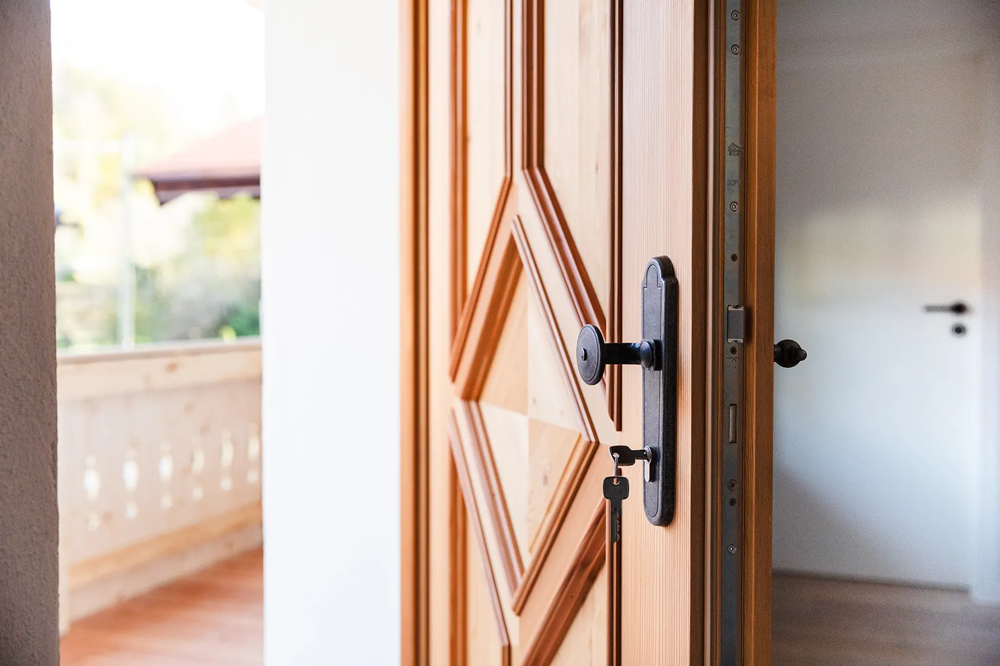
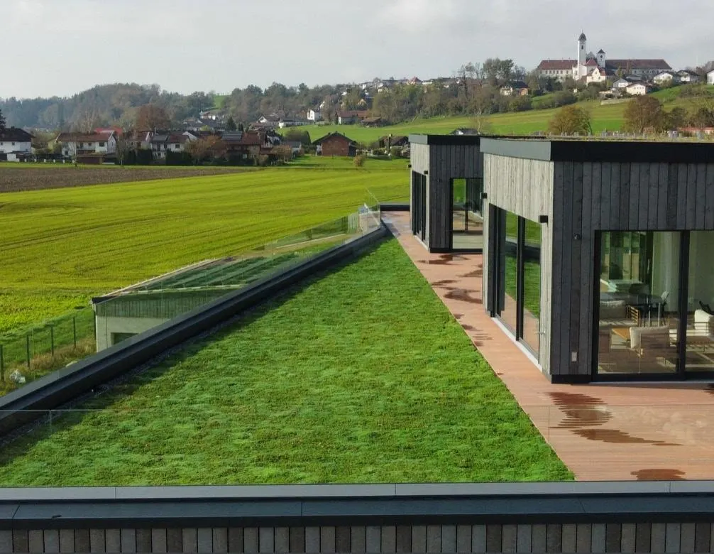
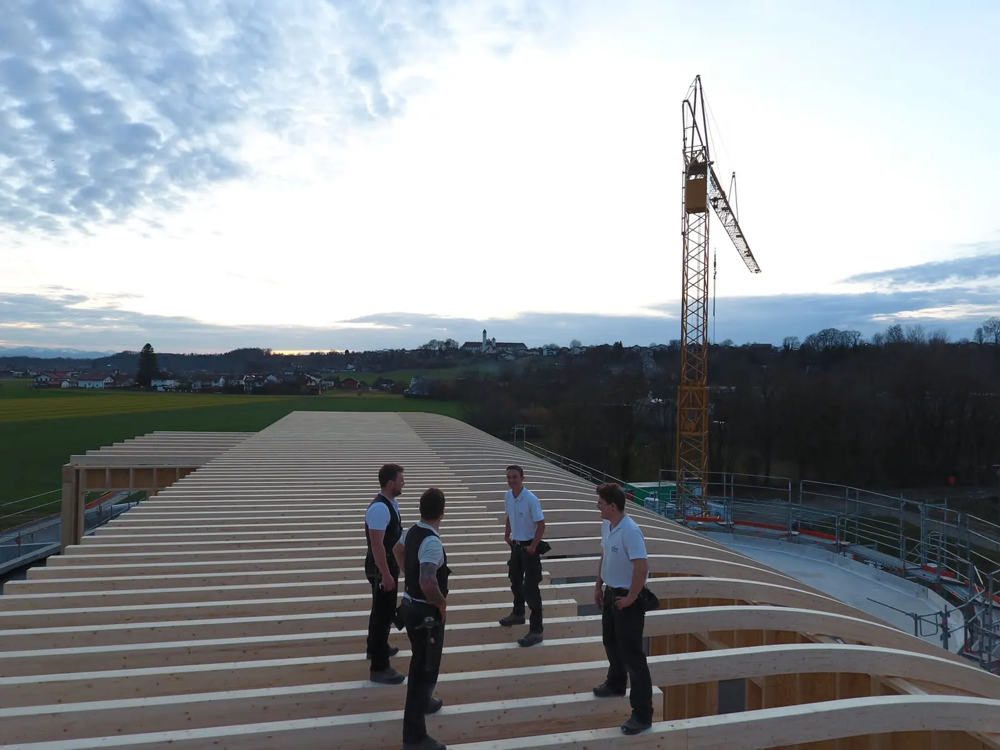

Ausgewählte Bestands- und Neubauprojekte, die wir als Bauträger selbst realisieren. Qualität, Flächeneffizienz und Zukunftssicherheit — konsequent in einem Haus vereint.
Als Bauträger realisieren wir auf eigenes Risiko ausgewählte Bestands- und Neubauprojekte. Aus dieser Tätigkeit wissen wir um die Wichtigkeit, lebenswerte Räume zum Leben und Arbeiten zu schaffen und dabei die Faktoren Qualität, Flächeneffizienz und Zukunftssicherheit zu vereinen.
Wir decken Neubauten im Bereich Wohnen und Gewerbe bis hin zur besonders anspruchsvollen Sanierung historischer und denkmalgeschützter Gebäude ab. Von der ersten Konzept-Skizze bis zur Übergabe liegt alles in einer Hand — und in der Verantwortung eines Teams.
Egal ob groß oder klein, ob gewerblich oder privat: es muss etwas Besonderes entstehen. Individuell und nicht „von der Stange".

Bereits bei der Konzeption bilden wir ein interdisziplinäres Team aus Projektentwicklern, Finanzierungs- und Vermarktungsprofis, Architekten, Ingenieuren und Bauleitern. Mit dem in Jahrzehnten gewachsenen Wissen dieses Teams fließen Fördermittel, Vermarktungspotentiale und langfristige Entwicklungen von Gesellschaft und Umwelt genauso ein wie Flächeneffizienz, Energieverbrauch und die Wahrnehmung der Immobilie durch ihre künftigen Nutzer.
Jeder Quadratmeter zählt. Energie- und Unterhaltungskosten werden von Beginn an mitgedacht.
Wie wirkt das Gebäude auf Nutzer und Nachbarn? Ein Faktor, der oft über Erfolg entscheidet.
KfW, BAFA, kommunale Programme — wir prüfen und schöpfen aus, was rechtlich möglich ist.
CO²-Preise ab 2027, Energiestandards, Mobilitätswandel — wir planen für das Jahr 2040, nicht für 2025.
Prüfung baurechtlicher Rahmenbedingungen, Fördermittel, Vermarktungspotentiale; Abstimmung mit Steuerberatern und Banken.
Genehmigungsplanung, Ausführungsplanung, Leistungsverzeichnisse — mit Liebe zum Detail und Blick auf den Preis.
Einzelvergabe statt Generalübernahme — pro Gewerk der beste Anbieter. Örtliche Bauleitung durch unser Team.
Mängelbeseitigung, kaufmännische Abwicklung und — auf Wunsch — Vermarktung durch unsere Partnergesellschaft.

Gestiegene Zinsen und hohe Baukosten haben den Markt verändert. Für Grundstückseigentümer, die verkaufen wollen, und für Käufer, die bauen möchten, entsteht dadurch ein Dilemma — Preise und Finanzierbarkeit passen oft nicht zusammen.
Für genau diese Situation haben wir ein Grundmodell zur gemeinsamen Realisierung von Bestands- und Neubauprojekten entwickelt. Sie profitieren unmittelbar von unserem Know-how — das Modell passen wir an Ihre Situation und Erwartungshaltung an.
Gemeinsame Realisierung entdeckenDas Grundmodell passen wir auf Ihre persönliche Situation und Erwartungshaltung an — kein Standard, sondern Ihre Lösung.
Direkter Zugriff auf unser interdisziplinäres Team und bewährte Partner aus Jahrzehnten gemeinsamer Projektarbeit.
Sie realisieren mehr, als es der klassische Vermarktungsweg ermöglichen würde — messbar und nachvollziehbar.
Wir arbeiten nur dort, wo wechselseitiges Vertrauen und ein wertschätzendes Miteinander vorhanden sind.
Lassen Sie uns gemeinsam prüfen, was möglich ist — auf eigenes Risiko, im Joint Venture oder über Baubetreuung Plus.